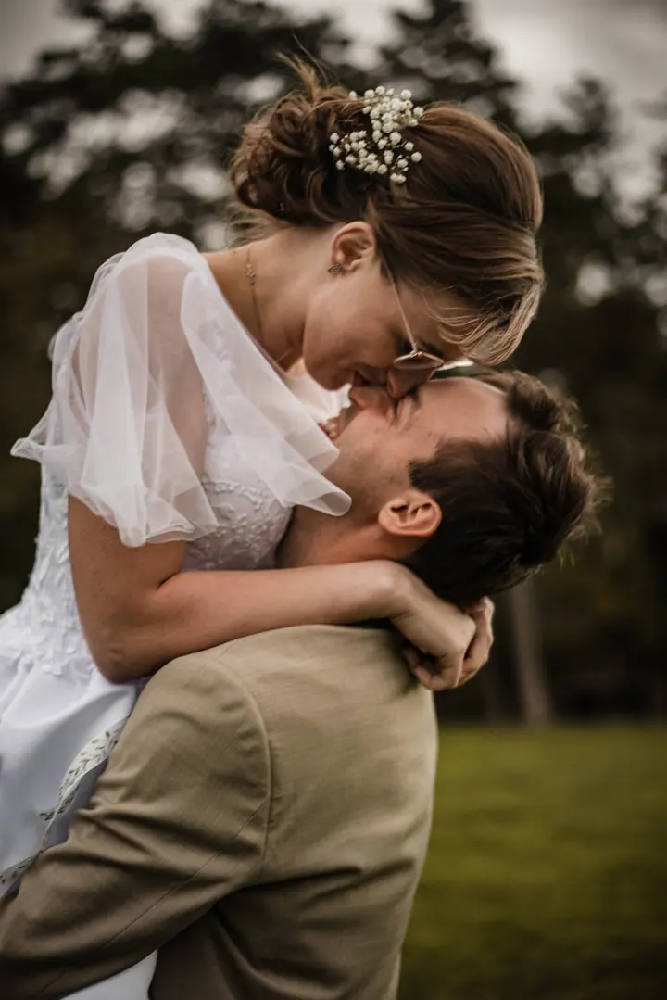
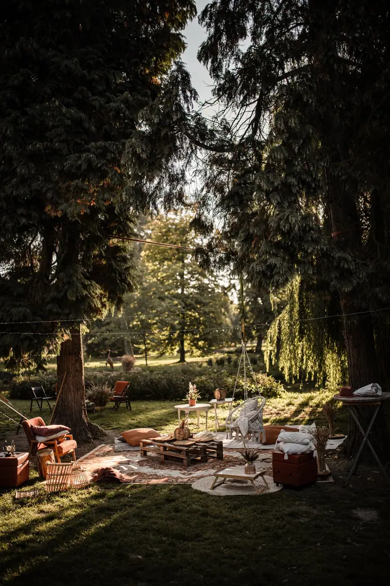

Svatby a elopementy
Fotím malé tajné elopementy i velké svatby plné lidí, kdekoliv po Evropě. Každá svatba je jiná, ale všude je láska a radost.

Jmenuji se Michaela Jurasová a fotím svatby, elopementy i zamilované páry. Doma jsem ve Veselí nad Moravou, ale ráda za vámi přijedu kamkoliv po celé Evropě, klidně i na…
Rezervovat termínNejdřív jsem propadla fotografii. Pak jsem začala vidět světlo. Dnes vidím krásu všude kolem sebe a nejraději zachycuji lidi a vztahy mezi nimi. Jsem snílek, který věří v lásku na celý život a nikdy nepřestal věřit pohádkám.


Portréty fotím od roku 2011, svatby od roku 2013 a od roku 2018 se fotografii věnuji naplno. Byl to krok od snahy vměstnat focení do života k tomu, udělat z něj svůj život. Není to vždycky snadná cesta, ale asi ta nejlepší. Na všechny svoje páry si pamatuji, jako by to bylo včera.
Miluju svítání a soumraky, vůni květin a letní déšť, ticho zasněžené krajiny a smích zamilovaných lidí. A čokoládu. Domluvíme se česky i anglicky, trochu rozumím německy a zrovna se učím norsky.
Co fotím
Fotím malé tajné elopementy i velké svatby plné lidí, kdekoliv po Evropě. Každá svatba je jiná, ale všude je láska a radost.
Obyčejné párové focení, zásnubní nebo předsvatební fotky. Společně vytvoříme fotky, které vystihnou vás dva a vaši lásku.
Lifestylové rodinné fotky plné života a skutečných vás. Přirozené portréty vaší rodiny takové, jaký je život.
Fotografie jsou ilustrační
Postup
Napište mi termín a co nejvíc o vašem dni. Podle toho vám připravím cenu na míru, klidně si můžeme i zavolat.
Před svatbou se vždycky potkáme, osobně nebo online. Můžeme se vidět i před rezervací, ať víte, že si sedneme.
Hledám světlo, detaily a chvíle, kterých si sami často ani nevšimnete, a příběh, který pak vyprávím fotkami.
Vyberu ty nejlepší a upravím je ve svém stylu. Hotové je máte nejpozději do měsíce, obvykle do týdne.
Otázky
V podstatě kamkoliv po Evropě a do okolních zemí. Jsem otevřená i cestám do Ameriky, ty je ale dobré rezervovat s velkým předstihem, protože tak dlouhou cestu chci spojit s více focením.
Nejdéle měsíc. Snažím se je mít co nejdřív, obvykle do týdne, ale někdy je hodně práce nebo cestování, proto počítejte s měsícem.
Ano, je to opravdu důležité, alespoň online. Potkat se můžeme i před rezervací, abyste se mohli rozhodnout nejen podle fotek, ale i podle toho, jestli si sedneme.
Ne, vybírám ty nejlepší. Věřte mi, že po pěti stech fotkách by vás procházení přestalo bavit. Objednáním focení souhlasíte s mým stylem fotografie a úprav.
Portréty, save the date a rodinné focení začínají na 4 000 Kč za 60 minut a zhruba 30–40 upravených fotek. Svatby kromě elopementů začínají přibližně na 1 200 €, přesnou cenu vám řeknu, až budu o vašem dni vědět víc.
